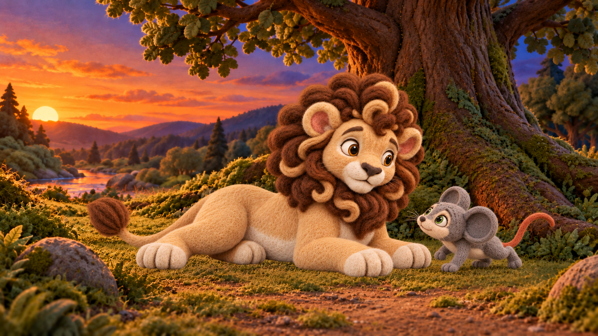
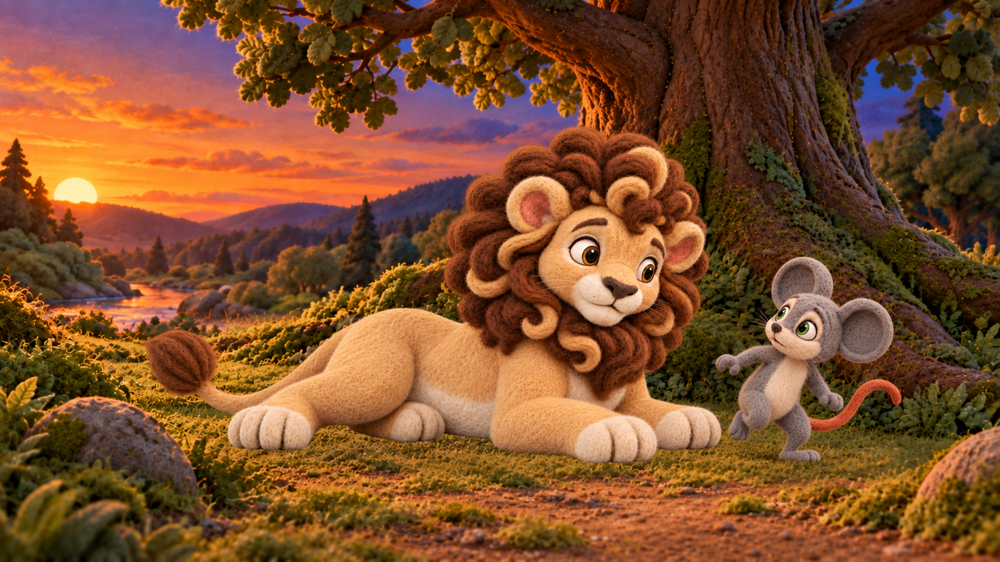

S06-L001-B02-I01_scramble_descent_r006_candidate.png

Original r006, preserved.
f385d913f123ff72e1e1480b3acf79767ebf04add06699049974bd63181c9d41S06-L001-B02-I01_scramble_descent_r008_candidate.png


Four-limb crawl reads too quadrupedal compared with canonical Milo; not recommended.
5bd6391d1a3d9056ac8e2004a0b44d50c20b645002432ea27859521174f7911eS06-L001-B02-I01_scramble_descent_r009_candidate.png


Stronger canonical upright torso and attached arms/legs; best of these two for owner body review. The lifted knee reads more like a balancing step than a clear downward scramble; scene preservation still fails exact pixels.
b59ccd28863e609e0925df9f9045c5dbc3a046e82888fa0d125e2d002124e12f